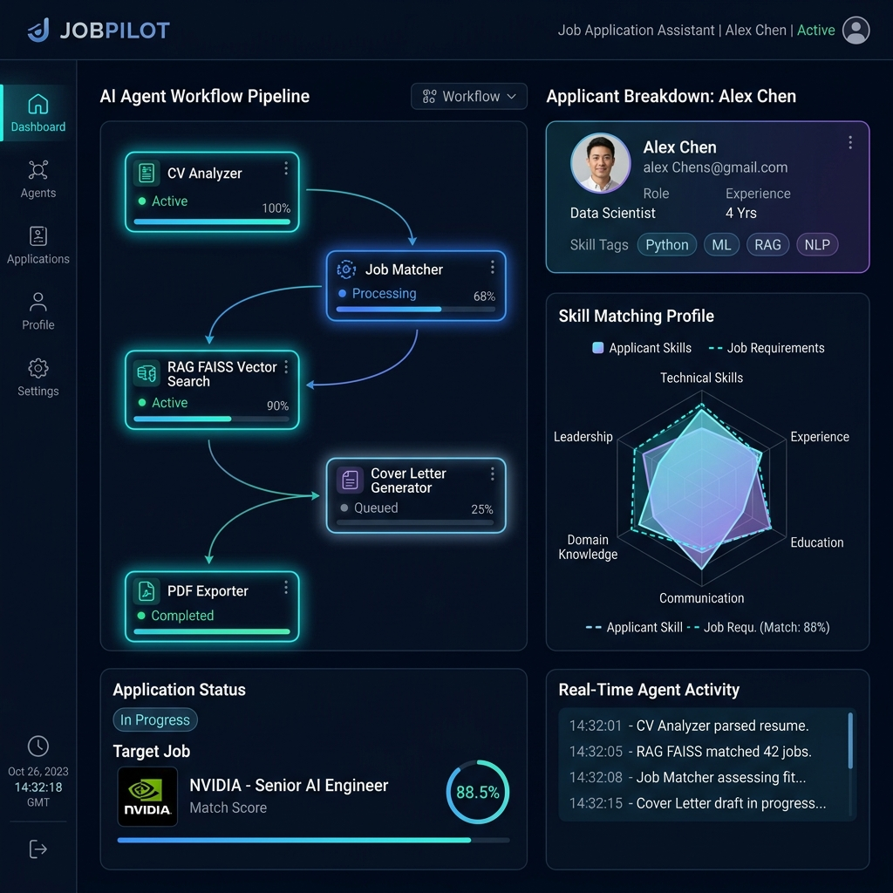
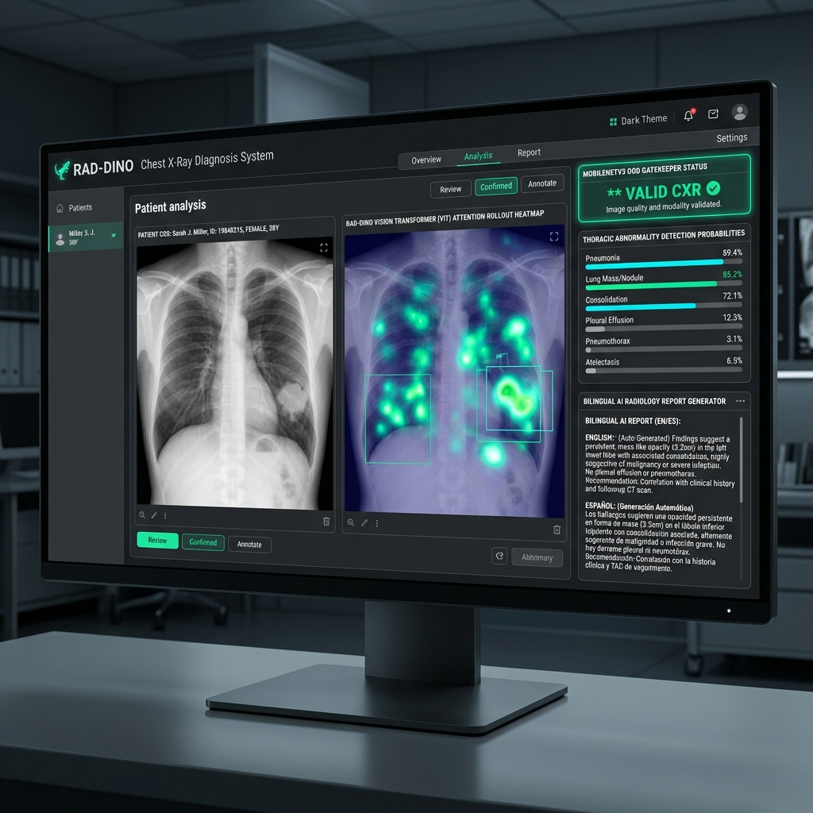
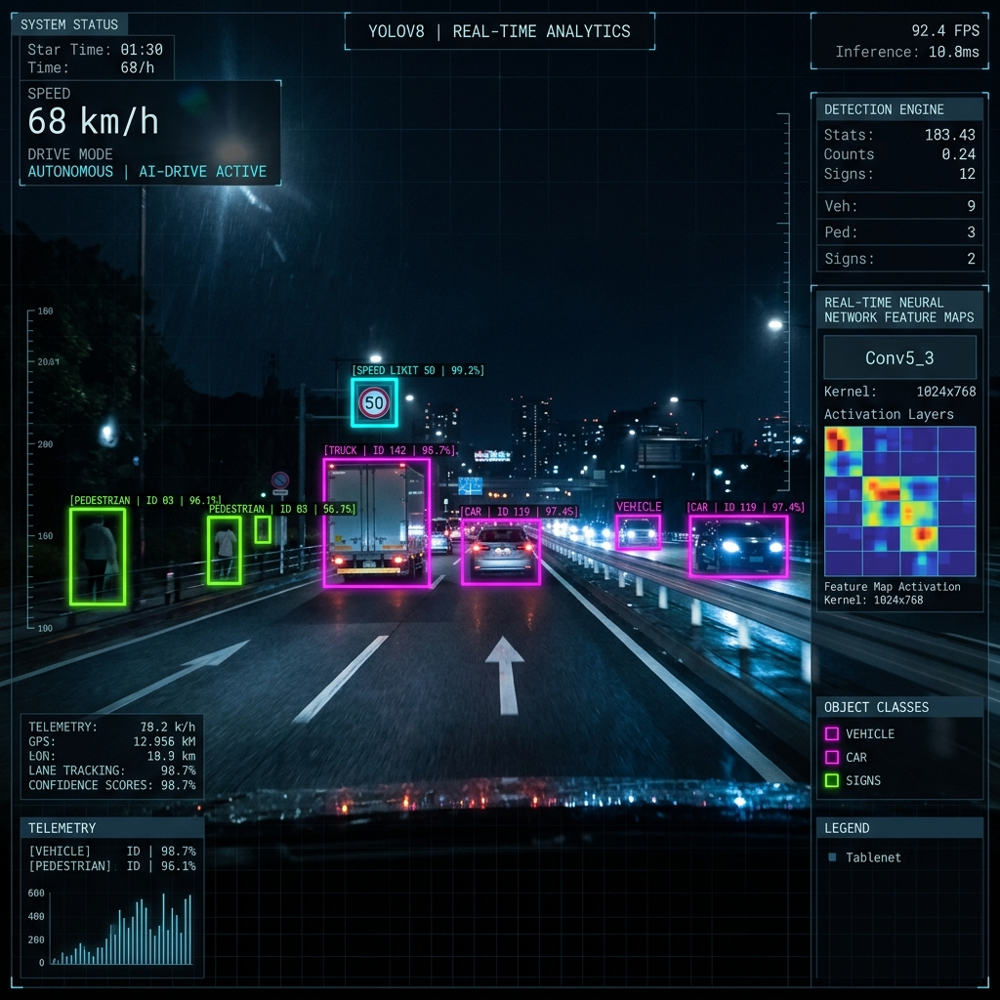

JobPilot — Multi-Agent AI Assistant
Multi-agent AI application assistant using Hugging Face local models, FAISS vector RAG, and Gradio interface to generate evidence-backed cover letters, Q&A, and PDF reports.
Computer Science graduate specializing in Artificial Intelligence & Generative AI. Experienced in building end-to-end AI systems — from Vision Transformer medical diagnosis to local Multi-Agent RAG applications with PyTorch, LLMs, and FastAPI.
An intelligent multi-agent framework that analyzes candidate CVs, evaluates job postings, retrieves grounded evidence via FAISS RAG, and automates job applications.
JobPilot orchestrates five specialized LLM agents working in unison. It takes a raw candidate CV and target job description, retrieves verbatim proof from local FAISS vector stores, and generates non-hallucinated cover letters, interview prep plans, and executive PDF reports.

Real-world applications spanning Deep Learning, Medical Computer Vision, RAG Systems, and Machine Learning.
Multi-agent AI application assistant using Hugging Face local models, FAISS vector RAG, and Gradio interface to generate evidence-backed cover letters, Q&A, and PDF reports.

Graduation project: Trained RAD-DINO Vision Transformer on 55,000+ images for 11 thoracic abnormalities. Features MobileNetV3 OOD Gatekeeper, Attention Rollout, and bilingual RAG chatbot.

Real-time object detection pipeline for autonomous driving. Optimized inference speed and evaluated detection robustness under dynamic lighting and weather conditions using YOLO & OpenCV.
Performed data preprocessing, feature engineering, and model training. Evaluated classification performance across Precision, Recall, F1-Score, and Confusion Matrix.
Linear regression model trained on 640+ vehicle dataset entries to estimate CO₂ emissions based on engine displacement and fuel parameters.
Binary classification model predicting next-day rainfall using 145,000+ historical weather records with class imbalance techniques.
Processed raw WHO COVID-19 datasets and built an interactive Streamlit app featuring real-time data filtering, time-series visualization, and choropleth maps.
Hands-on industry training and academic background in Artificial Intelligence.
Tips Hindawi · Egypt
Digital Hub (D-Hub) & Orange Digital Center · Egypt
Digital Egypt Pioneers Initiative (DEPI) · Egypt
Ahram Canadian University · Faculty of Computer Science & IT
Core competencies developed through coursework, internships, and production projects.
Sample production implementation logic from my RAG, Vision Transformer, and FastAPI pipelines.
from langchain.vectorstores import FAISS from transformers import AutoModelForCausalLM, AutoTokenizer # Initialize JobPilot Multi-Agent RAG Pipeline class JobPilotAgent: def __init__(self, model_name: "HuggingFaceH4/zephyr-7b-beta"): self.embeddings = HuggingFaceEmbeddings(model_name="BAAI/bge-small-en") self.vector_store = FAISS.load_local("cv_index", self.embeddings) def generate_application(self, job_desc: str): evidence_docs = self.vector_store.similarity_search(job_desc, k=3) prompt = self.build_grounded_prompt(job_desc, evidence_docs) return self.llm_generate(prompt)
I am actively seeking AI Engineering roles, LLM internships, and research opportunities.
Whether you have an opportunity or want to discuss AI architecture, feel free to drop me a message.